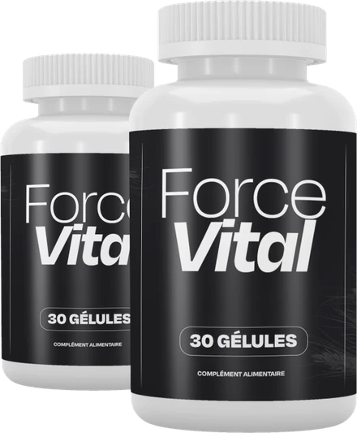
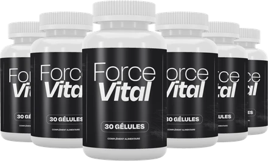
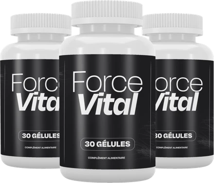

Qu’est-ce que ForceVital et comment agit-il ?
ForceVital est un complément alimentaire en gélules destiné aux hommes adultes. Le site officiel le présente comme une formule qui associe des minéraux, des vitamines, des acides aminés et des extraits végétaux, pensée pour accompagner l’énergie et la vitalité masculine au quotidien.
Chaque flacon contient 30 gélules. L’étiquette le décrit simplement comme un « complément alimentaire », et la page de vente insiste sur une prise facile à intégrer dans la routine du matin.
La formule réunit huit ingrédients principaux : la vitamine B3 (niacine), le zinc, la L-citrulline, la L-carnitine, un extrait d’écorce de pin (Pinus pinaster), un extrait de racine de maca, un extrait de peau de raisin et un extrait de filaments de safran.
Comment agit-il ? Selon le site officiel, le zinc contribue au maintien d’un taux normal de testostérone dans le sang, à une fertilité et à une reproduction normales, à des fonctions cognitives normales et à la protection des cellules contre le stress oxydatif. La niacine contribue à un métabolisme énergétique normal et à réduire la fatigue.
Les acides aminés et les extraits de plantes, comme l’écorce de pin, la maca, le safran et la peau de raisin, complètent la composition. La marque ne leur attribue pas d’allégation précise : ils font partie de la formule, sans promesse supplémentaire.
D’après l’étiquette, ForceVital est distribué dans l’Union européenne depuis les Pays-Bas, et l’assistance se fait par e-mail. La page de vente cite aussi un exploitant responsable de la mise sur le marché basé à Dublin.
Il faut rappeler que ForceVital est un complément alimentaire : il ne remplace pas une alimentation variée et équilibrée ni un mode de vie sain, et il n’est pas destiné à diagnostiquer, traiter ou guérir une maladie. Les résultats peuvent varier d’une personne à l’autre, selon l’âge, l’hygiène de vie et la régularité de la prise.
ForceVital – Ingrédients
La page de vente publie la dose de chaque ingrédient par gélule. L’étiquette française donne les mêmes valeurs, mais calculées pour deux gélules (soit le double). Voici la composition par gélule :
Vitamine B3, niacine (20 mg, 125 % des VNR) : contribue à un métabolisme énergétique normal, à réduire la fatigue et à des fonctions psychologiques normales.
Zinc, oxyde de zinc (11 mg, 110 % des VNR) : contribue au maintien d’un taux normal de testostérone et à protéger les cellules contre le stress oxydatif.
L-citrulline (150 mg) et L-carnitine (150 mg) : deux acides aminés.
Extrait d’écorce de pin, Pinus pinaster (100 mg).
Extrait de racine de maca, Lepidium meyenii (50 mg).
Extrait de peau de raisin (15 mg) et extrait de safran (5 mg).
Les autres composants indiqués sur l’étiquette sont l’agent d’enrobage hypromellose (la gélule), la cellulose microcristalline et des antiagglomérants (sels de magnésium d’acides gras et dioxyde de silicium). Aucune VNR n’a été établie pour les extraits de plantes et les acides aminés.
ForceVital – Effets secondaires
Le site officiel ne publie pas de liste d’effets secondaires. ForceVital associe des nutriments et des extraits de plantes courants, mais, comme pour tout complément alimentaire, la tolérance varie d’une personne à l’autre, et certaines précautions figurent clairement sur l’étiquette.
Le produit ne convient pas aux personnes de moins de 18 ans ni aux femmes enceintes ou allaitantes. L’étiquette recommande de consulter un médecin avant utilisation, en particulier si vous prenez des médicaments ou si vous souffrez d’une affection médicale. La page de vente demande aussi l’avis d’un médecin en cas de traitement médical.
Il ne faut pas dépasser la dose recommandée, ni utiliser un flacon dont le sceau de sécurité est endommagé ou manquant. Le flacon doit être conservé dans un endroit frais et sec, à une température inférieure à 30 °C, et hors de portée des enfants.
La niacine prise en quantité élevée est connue pour provoquer parfois une sensation de chaleur ou des rougeurs passagères. En cas de gêne ou de réaction inhabituelle, arrêtez la prise et demandez conseil à un professionnel de santé, en lui montrant l’étiquette du produit. Chaque organisme réagit différemment, et la prudence reste la meilleure approche.
ForceVital – Posologie
La page de vente officielle indique de prendre une gélule par jour, de préférence le matin avec de l’eau. À ce rythme, un flacon de 30 gélules couvre environ un mois d’utilisation.
L’étiquette française du flacon, elle, indique que les adultes prennent deux gélules par jour avec de l’eau, et son tableau nutritionnel est calculé pour deux gélules. Les deux indications ne concordent pas. En cas de doute, suivez l’étiquette du flacon que vous recevez, ne dépassez pas la dose qu’elle recommande et demandez l’avis de votre médecin ou de votre pharmacien.
La régularité compte davantage que la quantité. Un complément alimentaire agit en général de façon progressive, et la marque le présente comme un geste quotidien plutôt que comme une solution ponctuelle. Les résultats peuvent varier selon les personnes.
Pour en tirer le meilleur parti, il est utile de l’associer à une alimentation équilibrée, à une activité physique régulière et à un sommeil suffisant. L’étiquette rappelle que les compléments alimentaires ne remplacent pas un régime varié et un mode de vie sain.
Ne dépassez jamais la dose recommandée. Conservez le flacon fermé, dans un endroit frais et sec, hors de portée des enfants. La date de consommation de préférence est indiquée sur le fond du flacon.
ForceVital – Remboursement
ForceVital bénéficie d’une garantie satisfait ou remboursé de 30 jours, sans justification, d’après le site officiel. Si le produit ne vous convient pas, vous pouvez demander le remboursement de votre achat selon les conditions publiées par la marque.
Délai : la politique de remboursement indique que vous disposez de 30 jours à compter de la date de paiement. Vérifiez donc que vous êtes toujours dans ce délai avant de faire la demande.
Première étape : envoyez un e-mail à contact@vital-roots.site avec « Refund Request » en objet. Aucune justification n’est nécessaire.
Deuxième étape : renvoyez toutes les bouteilles à l’adresse indiquée dans la politique de remboursement : c/o ForceVital, Kleine Esch 669, 2841 MK Moordrecht, Pays-Bas. Ajoutez vos informations pour un traitement plus rapide. Les frais du retour restent à votre charge.
Troisième étape : le remboursement est traité après réception du colis, dans un délai de 5 à 10 jours, comme l’indique la politique publiée par la marque.
Le service client répond à la même adresse e-mail, et la page de contact mentionne aussi un numéro de téléphone. La politique complète est disponible sur le site officiel, et il est utile de la lire avant de commander, car les conditions peuvent évoluer avec le temps.
ForceVital – Où l’acheter ?
ForceVital se commande sur son site officiel, forcevital.site, et le paiement passe par Digistore24, la plateforme utilisée par la marque. C’est par ce site que les informations sur le produit, l’étiquette et la garantie sont publiées.
Des flacons proposés par des revendeurs inconnus peuvent sembler identiques, mais rien ne permet de vérifier leur origine ni la façon dont ils ont été conservés. Pour un complément alimentaire, cela pose une vraie question de qualité et de sécurité, et un achat hors du site officiel risque de ne pas être couvert par la garantie de 30 jours.
Voilà pourquoi la majorité des acheteurs commandent ForceVital directement à la source. Le site officiel donne accès au produit authentique, au service client et à la garantie complète, avec des informations à jour sur la formule.
Avant de commander, prenez quelques minutes pour lire l’étiquette, la politique de remboursement et la page de contact publiées par la marque. Au moment de payer, assurez-vous d’être bien sur le site officiel de ForceVital pour éviter toute contrefaçon.
Pour être sûr d’obtenir le produit authentique, la plupart des utilisateurs choisissent de passer par le site officiel.
2 flacons
Cure de 60 jours

79 € / flacon
158 € au total
Seulement 2,63 € par jour
- Garantie satisfait ou remboursé de 30 jours
- + 20,00 € de livraison

6 flacons
Cure de 180 jours

49 € / flacon
294 € au total
Seulement 1,63 € par jour
- Garantie satisfait ou remboursé de 30 jours
- Livraison gratuite
3 flacons
Cure de 90 jours

69 € / flacon
207 € au total
Seulement 2,30 € par jour
- Garantie satisfait ou remboursé de 30 jours
- Livraison gratuite
ForceVital est-il une arnaque ?
Au vu du site officiel et de l’étiquette, ForceVital ne semble pas être une arnaque. C’est un véritable complément alimentaire, vendu par l’intermédiaire de Digistore24, une plateforme de paiement reconnue, et pensé pour accompagner l’énergie et la vitalité des hommes adultes.
La page de vente présente la dose de chacun des huit ingrédients, et les allégations retenues sur le zinc et la niacine correspondent à des fonctions reconnues de ces nutriments en Europe.
L’étiquette mentionne une adresse de distribution aux Pays-Bas et une adresse e-mail d’assistance, et le site publie une politique de remboursement en quatre étapes, une politique de livraison et une page de contact.
Restez toutefois attentif à quelques points. La posologie de la page de vente (une gélule par jour) diffère de celle de l’étiquette (deux gélules par jour), et les pages du site ne citent pas toutes la même adresse de retour ni la même société. Fiez-vous à l’étiquette du flacon et à la politique de remboursement.
Chaque commande est couverte par une garantie satisfait ou remboursé de 30 jours, sans justification.
Pour les hommes adultes qui cherchent un complément quotidien simple pour soutenir l’énergie et réduire la fatigue, ForceVital peut être une option à considérer, commandée de préférence sur le site officiel et après avis médical si vous suivez un traitement.
Pour vérifier les détails du produit ou sa disponibilité actuelle, le site officiel de ForceVital reste l’option la plus sûre.
2 flacons
Cure de 60 jours
79 € / flacon
158 € au total
Seulement 2,63 € par jour
- Garantie satisfait ou remboursé de 30 jours
- + 20,00 € de livraison
6 flacons
Cure de 180 jours
49 € / flacon
294 € au total
Seulement 1,63 € par jour
- Garantie satisfait ou remboursé de 30 jours
- Livraison gratuite
3 flacons
Cure de 90 jours
69 € / flacon
207 € au total
Seulement 2,30 € par jour
- Garantie satisfait ou remboursé de 30 jours
- Livraison gratuite
Questions fréquentes sur ForceVital
Qu’est-ce que ForceVital et comment agit-il ?
ForceVital est un complément alimentaire en gélules destiné aux hommes adultes. Le site officiel le présente comme une formule qui associe des minéraux, des vitamines, des acides aminés et des extraits végétaux, pensée pour accompagner l’énergie et la vitalité masculine au quotidien.
Quels ingrédients contient ForceVital ?
La page de vente publie la dose de chaque ingrédient par gélule. L’étiquette française donne les mêmes valeurs, mais calculées pour deux gélules (soit le double). Voici la composition par gélule :
ForceVital a-t-il des effets secondaires ?
Le site officiel ne publie pas de liste d’effets secondaires. ForceVital associe des nutriments et des extraits de plantes courants, mais, comme pour tout complément alimentaire, la tolérance varie d’une personne à l’autre, et certaines précautions figurent clairement sur l’étiquette.
Comment prendre ForceVital ?
La page de vente officielle indique de prendre une gélule par jour, de préférence le matin avec de l’eau. À ce rythme, un flacon de 30 gélules couvre environ un mois d’utilisation.
Existe-t-il une garantie satisfait ou remboursé ?
ForceVital bénéficie d’une garantie satisfait ou remboursé de 30 jours, sans justification, d’après le site officiel. Si le produit ne vous convient pas, vous pouvez demander le remboursement de votre achat selon les conditions publiées par la marque.
Où acheter ForceVital ?
ForceVital se commande sur son site officiel, forcevital.site, et le paiement passe par Digistore24, la plateforme utilisée par la marque. C’est par ce site que les informations sur le produit, l’étiquette et la garantie sont publiées.
ForceVital est-il une arnaque ?
Au vu du site officiel et de l’étiquette, ForceVital ne semble pas être une arnaque. C’est un véritable complément alimentaire, vendu par l’intermédiaire de Digistore24, une plateforme de paiement reconnue, et pensé pour accompagner l’énergie et la vitalité des hommes adultes.